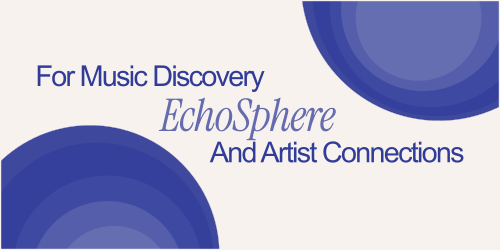

IN PROGRESS
ECHOSPHERE
CASE STUDY
Fall 2025
A music discovery platform that connects artists and listeners through innovative audio experiences. EchoSphere transforms how we discover, share, and connect through music in the digital age.
Tools:

CHOW CLUB
CASE STUDY
Fall 2024
This personal project, Chow Club, turns cooking into an adventure. A gamified journey designed to inspire the next generation to create, experiment, and savor the process. One meal at a time.
Tools:

SCIOLY @GT
DESIGN FEATURE
Spring 2025
For this client project, I worked with Georgia Tech's Science Olympiad team to design features that bring order to the chaos, making coordination seamless for admins and coaches alike.
Tools: